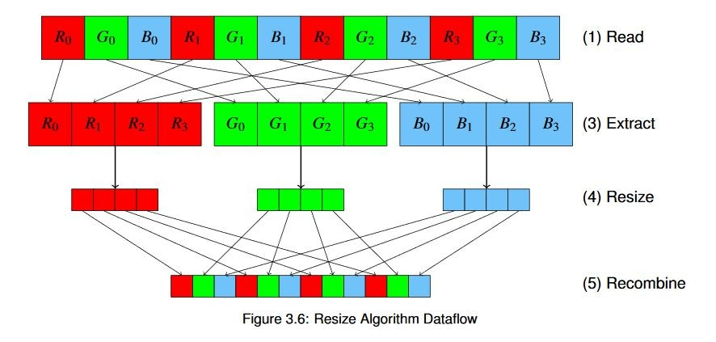

Vitis™ ハードウェア アクセラレーションの入門チュートリアルxilinx.com の Vitis™ 開発環境を参照 |
概要¶
画像処理は、FPGA でのアクセラレーションを活用するのに適した分野です。それにはいくつか理由があります。まず、画像をピクセル レベルで処理する場合、画像のサイズが大きいほど、計算量も増加します。この資料の冒頭で登場したモノレールの比喩がこれによく当てはまります。
ここで、バイラテラル サイズ変更アルゴリズムの簡単な例を見てみましょう。このアルゴリズムは、入力画像の解像度を変更します。この操作は次のようになります。
メモリから画像のピクセル データを読み出します。
必要に応じて、ピクセル データを適切なフォーマットに変換します。ここでは、OpenCV ライブラリで使用されるデフォルト フォーマットである BGR に変換します。さまざまなストリームやカメラなどからデータを受信する実際のシステムでは、ソフトウェアまたはアクセラレータ (次の例で説明するように、ここでは基本的に「コストのかからない」操作) でフォーマットを変換する必要があります。
カラー画像の場合は、各チャネルを抽出します。
個々のチャネルに対してバイラテラル サイズ変更アルゴリズムを使用します。
チャネルを再結合し、メモリに戻します。
これを図で表すと、次のようになります。

この図では、オプションの色変換手順は示していません。
これらの操作は、1 つずつ順に実行されます。前にも説明しましたが、メモリに何度もアクセスするのはコストがかかります。メモリからデータをストリーミングしながら、FPGA でこれらの計算すべてを実行できれば、通常は各操作および計算の追加レイテンシが非常に短くなります。これを利用して、インプリメントする特定の関数用にハードウェアを最適に使用するカスタム ドメイン特化アーキテクチャを構築できます。
そして、クロックごとにより多くのピクセルを処理するためにデータパス幅を広くするか (アムダールの法則)、または複数のパイプラインを使用して多くの画像を並行処理するか (グスタフソンの法則) を選択できます。理想的には、この両方を使用して最適化していきます。アルゴリズムをできるだけ効率よく処理できるカーネルを構築し、FPGA ファブリックを最大限に活用してできるだけ多くのカーネルを配置します。
キー コード¶
このアルゴリズムには、Vitis ビジョン ライブラリを使用します。これはハードウェア用に最適化されたライブラリで、アプリケーションで直接使用可能なよく使用されるビジョン関数 (概念的に OpenCV に類似) の多くをインプリメントします。このライブラリは、必要に応じてソフトウェアの OpenCV 関数やほかのライブラリ呼び出しと組み合わせて使用することもできます。
また、ほかのカーネル用に、画像の事前および事後処理用にこれらのライブラリを使用することも可能です。たとえば、カメラやネットワーク ストリームから生のデータを入力して、それを事前処理し、その結果をニューラル ネットワークに入力して処理するなどです。これらの操作は、ホスト メモリに戻らずにすべて FPGA で実行でき、すべて並列処理できます。発生する可能性のある唯一の競合は、レジスタ空間の競合ではなく、帯域幅の競合である、パイプライン処理された機能のストリームを構築すると考えてください。
Vitis ビジョン ライブラリで、テンプレートを使用して、クロックごとに処理するピクセルの数などを設定します。詳細は、Vitis ビジョン ライブラリの資料を参照してください。
アプリケーションの実行¶
XRT ランタイムが初期化されたら、ビルド ディレクトリから次のコマンドを実行してアプリケーションを実行します。
./07_opencv_resize alveo_examples <path_to_image>
この例でのハードウェアのコンフィギュレーション方法のため、画像が特定の要件を満たす必要があります。1 クロックごとに 8 ピクセル処理するので、入力幅は 8 の倍数である必要があります。
そうでない場合、要件が満たされていないことを示すエラー メッセージが表示されます。これはライブラリの基本的な要件ではありません。どんな解像度の画像でも、1 クロックごとに何ピクセルでも処理できます。ただし、入力画像が特定の要件を満たしていれば、さらに高速処理が可能となり、最適なパフォーマンスが得られます。ハードウェアおよびソフトウェア OpenCV インプリメンテーション両方からのサイズ変更後の画像に加え、プログラムにより次のようなメッセージが表示されます。
-- Example 7: OpenCV Image Resize --
OpenCV conversion done! Image resized 1920 x 1080 to 640 x 360
Starting Xilinx OpenCL implementation...
Matrix has 3 channels
Found Platform
Platform Name: Xilinx
XCLBIN File Name: alveo_examples
INFO: Importing ./alveo_examples.xclbin
Loading: ’./alveo_examples.xclbin’
OpenCV resize operation: 5.145 ms
OpenCL initialization: 292.673 ms
OCL input buffer initialization : 4.629 ms
OCL output buffer initialization : 0.171 ms
FPGA Kernel resize operation : 4.951 ms
この例では根本的に違う操作を実行しているので、前の実行と結果を比較することはしませんが、画像を処理するのにかかる時間を Alveo カードと CPU で比較することは可能です。
現時点では、Alveo カードと CPU の結果はほぼ同じです。使用しているバイリニア補間アルゴリズムは O(N) ですが、計算は前ほど単純ではないので、前ほど I/O で制限されません。CPU を上回ることはできますが、ほんの少しだけです。
ここで興味深いのは、多くの計算を入力の解像度ではなく出力の解像度に基づいて実行しているということです。同じ量のデータを転送する必要がありますが、画像を入力の 1/3 のサイズに変換するのではなく、解像度を倍にしたらどうなるかを見てみましょう。例のコードを次のように変更し、再コンパイルします。
uint32_t out_width = image.cols*2;
uint32_t out_height = image.rows*2;
例を再び実行すると、興味深い結果が得られます。
-- Example 7: OpenCV Image Resize --
OpenCV conversion done! Image resized 1920 x 1080 to 3840 x 2160
Starting Xilinx OpenCL implementation...
Matrix has 3 channels
Found Platform
Platform Name: Xilinx
XCLBIN File Name: alveo_examples
INFO: Importing ./alveo_examples.xclbin
Loading: ’./alveo_examples.xclbin’
OpenCV resize operation : 11.692 ms
OpenCL initialization : 256.933 ms
OCL input buffer initialization : 3.536 ms
OCL output buffer initialization : 7.911 ms
FPGA Kernel resize operation : 6.844 ms
ここではひとまず、バッファーの初期化は除外して考えます。適切に設計されたシステムでは、メモリ割り当てはアプリケーションのクリティカルパスでは実行されません。データ転送も含めたサイズ変更処理を見ると、CPU よりほぼ 60% 高速です。
CPU と Alveo カードは両方ともこの画像を比較的高速に処理できますが、システム全体のスループット目標が 1 秒ごとに 60 フレームを処理することである場合を考えてみてください。その場合、各フレームを処理するのに 16.66 ms しかありません。たとえば、サイズ変更したフレームをニューラル ネットワークに入力する場合、ほぼすべての時間を使い切ってしまいます。
パイプラインを実行するためバッファーのチェーンをあらかじめ割り当てれば、アクセラレータを使用することによりフレームごとの時間をほぼ 30% 回復できます。
入力画像のサイズが 1920x1200 の場合、結果は次の表に示すようになります。
| 動作 | 縮小 | 拡大 |
|---|---|---|
| ソフトウェアでのサイズ変更 | 5.145 ms | 11.692 ms |
| ハードウェアでのサイズ変更 | 4.951 ms | 6.684 ms |
| ΔAlveo→CPU | -194 µs | -5.008 ms |
さらに、色変換は含めていなかったことを思い出してください。FPGA ではこれはコストのかからない操作です。追加で数クロック サイクル (ns) のレイテンシがありますが、基本的にはピクセル値に対していくつかの乗算および加算を実行する単純な O(N) 演算です。
追加演習¶
この演習に、追加で次のことを試してみてください。
ホスト コードを編集し、試行錯誤で画像サイズを変えてみましょう。画像サイズを大きくすると、実行時間はどうなりますか。画像サイズを小さくするとどうなりますか。アクセラレータを使用する意味がなくなるのはどの地点はですか。
FPGA アクセラレータに色変換を追加します (ハードウェアを再ビルドする必要あり)。処理時間が長くなるかどうかを確認します。
学習ポイント
計算がより複雑な O(N) 演算はアクセラレーションの良い候補となりますが、CPU と比較して大きな利点は見られません。
xf::OpenCV などの FPGA に最適化されたライブラリを使用すると、一般的なアルゴリズムを再インプリメントする必要なく、処理速度とリソースのバランスを取ることができますき、アプリケーションのより重要な部分に焦点を置くことができます。
選択するライブラリの最適化によって、デザインが制限されることがあります。ハードウェアをインプリメントする前に、使用するライブラリ関数の資料を参照してください。
先ほど、FPGA ファブリックでの追加処理は非常に短時間で実行できると述べました。次のセクションで、これが本当であるかを見てみます。
例 8: Vitis ビジョンを使用した処理パイプラインの構築
Copyright© 2019-2022 Xilinx